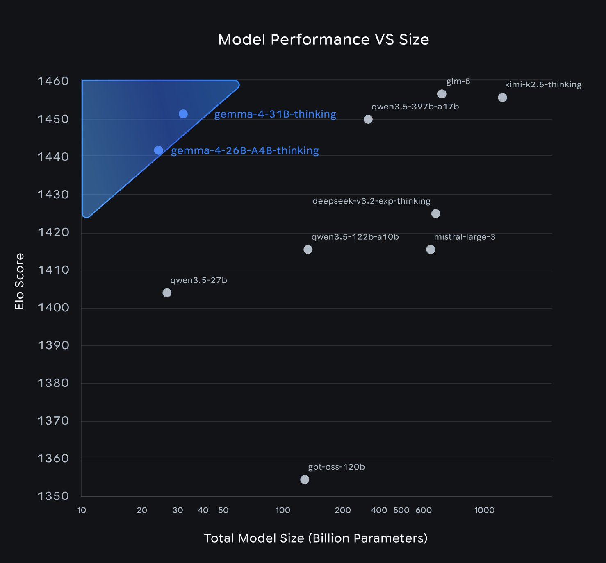
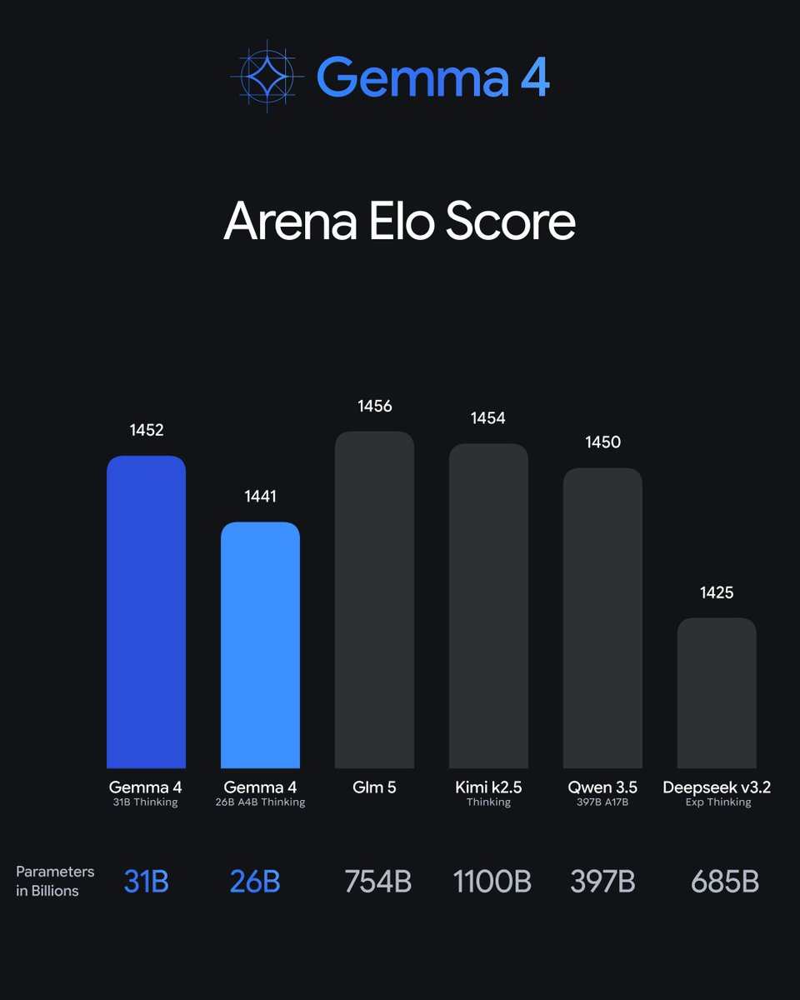
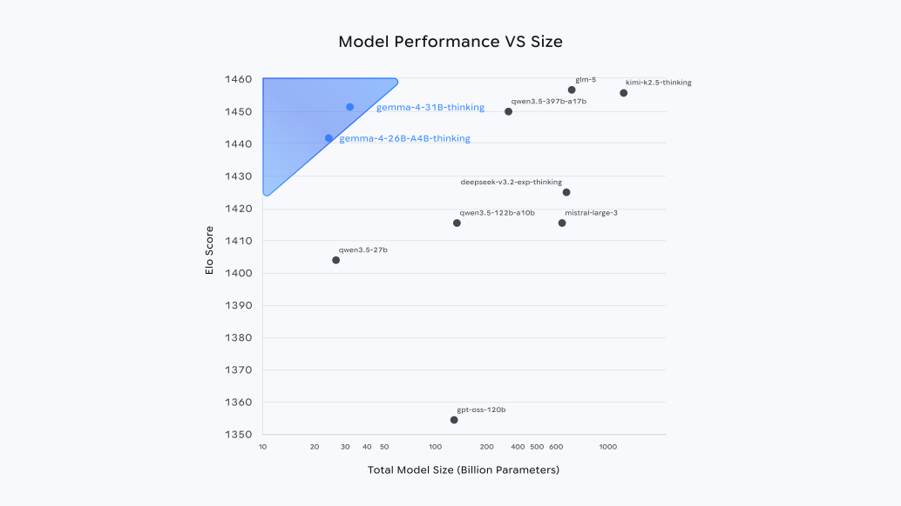

Google dropped Gemma 4 on April 2nd, and for once the open-weights release cycle is moving faster than the hype cycle can catch up. I've spent the last couple of days working through the technical docs, running the models locally, and reading the community reaction. Here's what I actually think.
The short version: Gemma 4 is a genuinely capable model family. But the headline isn't a benchmark number. It's a license. Apache 2.0 — no asterisks, no carve-outs, no monthly active user cap tucked into a Terms of Use PDF. That's the thing that will matter in six months, not whether the 31B scores 0.3 points higher than Qwen on GPQA Diamond.

The Lineup
Four models, two design philosophies. Google calls them the edge tier and the workstation tier, and the distinction is real — these aren't just different sizes of the same thing.
| Model | Effective Params | Total Params | Context | Target |
|---|---|---|---|---|
| Gemma 4 E2B | 2.3B | 5.1B | 128K | On-device |
| Gemma 4 E4B | 4.5B | 8.0B | 128K | On-device |
| Gemma 4 26B A4B | 4B active | 26B (MoE) | 256K | Workstation/server |
| Gemma 4 31B Dense | 31B | 31B | 256K | Workstation/server |
The "E" in E2B and E4B stands for "effective" — Google's shorthand for Per-Layer Embeddings (PLE). The idea: rather than just having one embedding table at the input, PLE adds a second embedding table that feeds a small residual signal into every decoder layer. The result is that a 4.5B effective parameter model gets representational depth well beyond its actual weight count. On quality-per-size benchmarks, it shows.
The 26B model is a Mixture of Experts architecture with only 4 billion parameters active during inference. You get the quality of a large model at the compute cost of a much smaller one — in theory. (More on the catch in a moment.)
Two notable absences: there's no replacement for Gemma 3's popular 12B, leaving an awkward gap between ~4.5B effective and 26B. And the rumored 120B flagship that pre-release chatter had anticipated didn't materialize at launch. Make of that what you will.

The Architecture Worth Understanding
I want to spend some time here because the technical decisions in Gemma 4 are genuinely interesting, and they're the kind of thing that gets lost when coverage focuses entirely on benchmark tables.
Alternating Attention
Rather than running full attention through every layer, Gemma 4 alternates between local sliding-window attention and global full-context attention. Local layers use 512-token windows on smaller models, 1024-token on larger ones. The final layer is always global. This is substantially more compute-efficient than dense full attention throughout — it's how you get to 256K context windows without proportional cost blowup.
Dual RoPE
Standard rotary positional embeddings for local attention layers; Proportional RoPE (p-RoPE) for global layers. The combination is what enables reliably useful performance at 256K tokens rather than just nominally supporting it. A lot of models claim long context; fewer actually deliver quality at that length. The dual-RoPE design is specifically aimed at closing that gap.
Built-in Multimodal
Vision support is native across all four models — not a separate multimodal variant, not a fine-tuned fork, but baked into the base architecture. The vision encoder uses learned 2D positions with multi-dimensional RoPE and a configurable image token budget (70 to 1120 tokens depending on the task). Audio support (via a USM-style conformer encoder) is available in the E2B and E4B edge models.
This matters more than it might seem. With Gemma 3, if you wanted vision you got the vision model and made tradeoffs. With Gemma 4, you just get vision. Same weights, same deployment, same inference stack — multimodal capability is just there.
The Benchmarks: An Honest Read
The official numbers are strong. Here's a representative slice:
| Benchmark | 31B Dense | 26B A4B | E4B | E2B |
|---|---|---|---|---|
| MMLU Pro | 85.2% | 82.6% | 69.4% | 60.0% |
| GPQA Diamond | 84.3% | 82.3% | 58.6% | 43.4% |
| AIME 2026 | 89.2% | 88.3% | 42.5% | 37.5% |
| LiveCodeBench v6 | 80.0% | 77.1% | 52.0% | 44.0% |
| MMMU Pro (vision) | 76.9% | 73.8% | 52.6% | 44.2% |
On LMArena — human preference rankings rather than automated benchmarks — the 31B Dense sits at roughly #3 among open models with an ELO around 1452. That puts it ahead of Llama 4 Maverick, which has hundreds of billions of total parameters. The 26B MoE holds an ELO of ~1441 with only 4B parameters active. These are legitimately good numbers.

But here's where the honest part comes in.
The speed problem is real
Community benchmarks are showing the 26B MoE at roughly 11 tokens per second on hardware where Qwen 3.5 35B runs at 60+. That's not measurement noise — it's a 5x difference. For interactive applications, that gap is felt by every user every time they hit send. Impressive ELO numbers don't help when you're watching a spinner.
Chinese models remain competitive
On aggregate leaderboard benchmarks, Qwen 3.5, GLM-5 (Zhipu AI), and Kimi K2.5 (Moonshot AI) are at or slightly ahead of Gemma 4's flagship. Where Gemma 4 genuinely outperforms: non-English multilingual tasks (German, Arabic, Vietnamese, French) and human preference evaluations. That tells you something about where Google put training resources, and it's actually an interesting and underreported advantage. But "Gemma 4 beats the Chinese models" is marketing. The real picture is a close pack at the frontier.
The 256K context window has caveats
Practically realizing the full 256K window requires substantial VRAM headroom. Several users reported that on identical GPU hardware, Qwen 3.5 could use 190K context while Gemma 3's 27B was limited to ~20K due to memory overhead. Gemma 4's theoretical limit is bigger; whether your hardware can actually reach it is a separate question worth benchmarking before you build anything on it.
Running It on Your Mac
The good news: day-one support across the entire standard local inference stack. The E4B quantized to GGUF is ~9.6GB — comfortably fits a Mac mini M4 or any recent MacBook Pro.
Ollama is the easiest starting point:
# Edge models — audio and vision included
ollama run gemma4:e2b # ~5.5GB
ollama run gemma4:e4b # ~9.6GB
# Workstation models
ollama run gemma4:26b # ~18GB, MoE
ollama run gemma4:31b # ~20GB, denseOn Apple Silicon, Ollama automatically routes through Apple's MLX framework — no manual configuration needed. For more control, you can invoke MLX directly:
# Native MLX — faster on Apple Silicon
mlx_vlm.generate \
--model google/gemma-4-E4B-it \
--image path/to/image.jpg \
--prompt "Describe this in detail"llama.cpp also works out of the box:
llama-server -hf ggml-org/gemma-4-E2B-it-GGUFHardware guidance based on community testing:
- MacBook Pro M3 (18–36GB): E4B runs well. 26B is possible with 36GB, tight with less.
- Mac mini M4 Pro: E4B with headroom. 26B works with 24GB+.
- Mac Studio / Mac Pro with M3 Ultra: All four variants comfortably.
One early note from the community: there were reports of crashes and edge-case instability in first-day Mac testing. Give the ecosystem a week to stabilize before building anything important on top of it. This is normal for a fresh release.
Availability Beyond Your Local Machine
Gemma 4 is accessible essentially everywhere you'd want it:
- Hugging Face: All four models at
google/gemma-4-e2b-it,google/gemma-4-e4b-it, etc. Transformers, TRL, MLX, vLLM, SGLang all supported day one. - Google AI Studio: Free web UI access at launch — useful for quick tests before committing to local deployment.
- Vertex AI: Full production deployment support.
- LM Studio: Search
gemma4in the model browser. - NVIDIA NIM / NeMo: Enterprise GPU deployment.
- Android AICore Developer Preview: On-device for Android apps, targeting the edge models.
What Actually Matters Here

Let me be direct about something: the Apache 2.0 license is the most important thing that happened on April 2nd. Not the benchmarks, not the architecture paper, not the MoE design.
Previous Gemma versions shipped with a custom Terms of Use that included monthly active user caps. Which meant any team building a product on Gemma had to track MAUs, stay under a threshold, or risk a compliance conversation with Google's lawyers. That's not a theoretical risk — it's a procurement headache that real teams encountered. Quietly, those teams chose Mistral, Qwen, and Llama instead.
Apache 2.0 removes all of that. No MAU caps. No acceptable-use restrictions. No royalties. No "harmful use" policy clause that creates ambiguity or backdoor access. Commercial teams can now build on Gemma the same way they build on Llama — which is to say, fully, without reservation.
Nathan Lambert at Interconnects.ai called it correctly: the license change "will massively boost adoption." That's not hype. That's how enterprise software procurement works.
There's also a geopolitical angle that deserves more attention than it's getting. Several enterprise procurement and security teams are now actively preferring US-origin AI models over Chinese providers — for compliance, data governance, and supply chain reasons that have nothing to do with benchmark rankings. Gemma 4 being a strong, Apache-licensed, US-origin model is genuinely useful positioning that no benchmark table captures.
The Gaps Worth Watching
Three things I'm keeping an eye on before getting fully bullish:
Fine-tuning ecosystem maturity. At launch, HuggingFace Transformers lacked full architecture support and PEFT couldn't handle the new layer types. Lambert was explicit that fine-tuning tooling for new architectures takes "weeks to stabilize" after release. If you're building a fine-tuned application on Gemma 4, give it a few weeks before committing.
The inference speed problem. 11 tokens/sec versus Qwen's 60+ is a real product disadvantage. Either Google addresses this with optimized inference kernels in the coming weeks, or Gemma 4 will feel slow in interactive applications regardless of what the benchmark tables say. This is the most important open question for practical deployment.
No mid-tier model. The gap between E4B (~4.5B effective) and 26B is real and users will feel it. The Gemma 3 12B occupied a sweet spot — capable enough for serious tasks, small enough to run broadly — and there's nothing analogous in Gemma 4. Some use cases fall awkwardly in between.
Bottom Line
If you avoided Gemma because of the license terms: reconsider. Apache 2.0 removes the blocker. There is no longer a legal reason to prefer Llama or Mistral on commercial grounds.
If you're evaluating open models for a new project: test the 26B MoE. The efficiency profile — 4B parameters active at inference, strong human preference rankings — is genuinely impressive. But benchmark inference speed on your specific hardware before committing. The 11 token/sec community reports are concerning enough to verify.
If you're a researcher interested in the architectural direction: the PLE technique in the edge models is worth studying. It's a clever solution to a real problem — getting depth out of small models — and I expect to see it influence other small model work in the coming months.
If you're looking for raw benchmark supremacy: the picture is mixed. Gemma 4 wins on human preference evaluations and multilingual tasks. Chinese open models (Qwen 3.5, GLM-5, Kimi K2.5) remain competitive or ahead on aggregate automated benchmarks. The "Gemma 4 beats everything" framing is marketing. The reality is a close and genuinely competitive frontier.
The open-weights space in April 2026 is legitimately interesting in a way it wasn't a year ago. Strong models from multiple directions, meaningful architectural diversity, serious competition from outside the US. The Apache 2.0 license move is Google choosing to fully participate in that ecosystem rather than hovering at its edge. That's the actual story here.